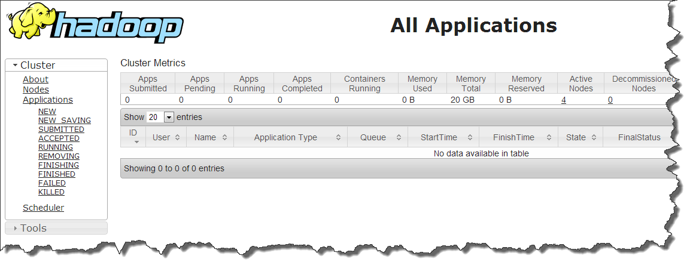
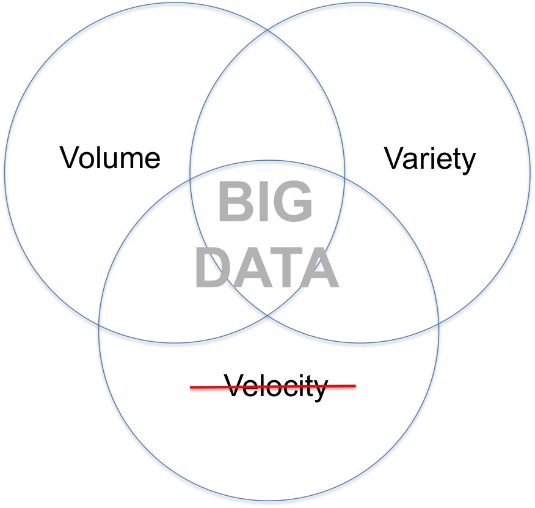
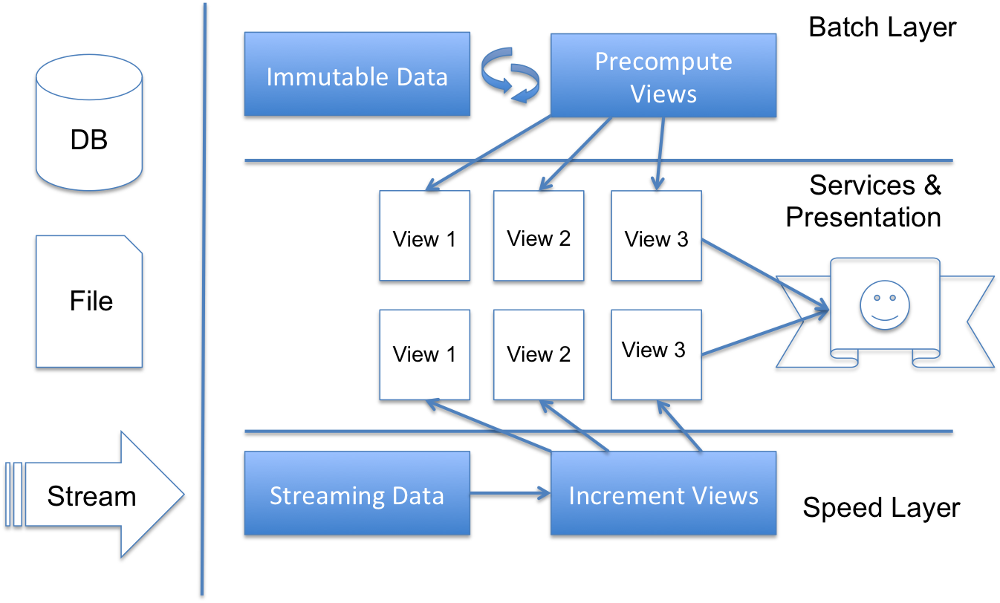

Big Data in Real Time
Presentation by Myles Baker / @mydpy

This paradigm unlocks intelligence on your data not previously possible.
But by definition is run in batch.
Is that really a solution for velocity?
Probably not.
Lambda Architecture
Record breaking
- 3x as fast
- 10x fewer machines
Spark is written in Scala
Parallel Processing
data.par.map(_ * 2)
Immutability
val cannotChange = List(1,2,3,4,5)
Still JVM
Type Inference
val str = "I am definitely a String"
Functional
public List<Product> getProducts(List<Order> orders) {
List<Product> products = new ArrayList<Product>();
for (Order order : orders) {
products.addAll(order.getProducts());
}
return products;
}
Vs.
def products = orders.flatMap(o => o.products)
Spark operations look
awfully familiar...
- map( { .. } )
- filter( { .. } )
- flatMap( { .. } )
- reduceByKey( { .. } )
- reduce( { .. } )
- foreach( { .. } )
Java 7
JavaRDD<String> distFile = sc.textFile("README.md");
// Map each line to multiple word
JavaRDD<String> words = distFile.flatMap(
new FlatMapFunction<String, String>() {
public Iterable<String> call(String line) {
return Arrays.asList(line.split(" "));
}
});
Java 8
JavaRDD<String> distFile = sc.textFile("README.md");
JavaRDD<String> words =
distFile.flatMap(line -> Arrays.asList(line.split(" ")));
Questions?
Ok let's go do something.
http://spark.apache.org/docs/1.2.1/quick-start.html
https://github.com/apache/spark